2. Geometry¶
2.1. Constructive Solid Geometry¶
OpenMC uses a technique known as constructive solid geometry (CSG) to build
arbitrarily complex three-dimensional models in Euclidean space. In a CSG model,
every unique object is described as the union, intersection, or difference of
half-spaces created by bounding surfaces. Every surface divides all of
space into exactly two half-spaces. We can mathematically define a surface as a
collection of points that satisfy an equation of the form 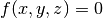
where 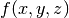 is a given function. All coordinates for which
 are referred to as the negative half-space (or simply the
negative side) and coordinates for which are referred to
as the positive half-space.
are referred to as the negative half-space (or simply the
negative side) and coordinates for which are referred to
as the positive half-space.
Let us take the example of a sphere centered at the point 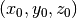
with radius  . One would normally write the equation of the sphere as
. One would normally write the equation of the sphere as
(1)
By subtracting the right-hand term from both sides of equation (1), we can then write the surface equation for the sphere:
(2)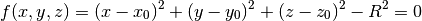
One can confirm that any point inside this sphere will correspond to
and any point outside the sphere will correspond to
.
In OpenMC, every surface defined by the user is assigned an integer to uniquely identify it. We can then refer to either of the two half-spaces created by a surface by a combination of the unique ID of the surface and a positive/negative sign. The following illustration shows an example of an ellipse with unique ID 1 dividing space into two half-spaces.
Example of an ellipse and its associated half-spaces.
References to half-spaces created by surfaces are used to define regions of space of uniform composition, known as cells. While some codes allow regions to be defined by intersections, unions, and differences or half-spaces, OpenMC is currently limited to cells defined only as intersections of half-spaces. Thus, the specification of the cell must include a list of half-space references whose intersection defines the region. The region is then assigned a material defined elsewhere. The following illustration shows an example of a cell defined as the intersection of an ellipse and two planes.

The shaded region represents a cell bounded by three surfaces.
The ability to form regions based on bounding quadratic surfaces enables OpenMC to model arbitrarily complex three-dimensional objects. In practice, one is limited only by the different surface types available in OpenMC. The following table lists the available surface types, the identifier used to specify them in input files, the corresponding surface equation, and the input parameters needed to fully define the surface.
| Surface | Identifier | Equation | Parameters |
|---|---|---|---|
Plane perpendicular
to  -axis -axis |
x-plane |  |
|
| Plane perpendicular to 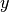-axis | y-plane | |
|
Plane perpendicular
to  -axis -axis |
z-plane | |
 |
| Arbitrary plane | plane |  |
|
| Infinite cylinder
parallel to
-axis |
x-cylinder |  |
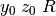 |
| Infinite cylinder parallel to -axis | y-cylinder | 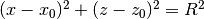 | 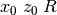 |
| Infinite cylinder
parallel to
-axis |
z-cylinder |  |
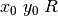 |
| Sphere | sphere | 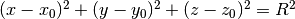 | 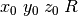 |
| Cone parallel to the
-axis |
x-cone | 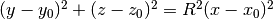 | 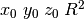 |
| Cone parallel to the -axis | y-cone | 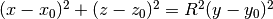 | |
| Cone parallel to the
-axis |
z-cone | 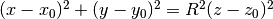 |
2.1.1. Universes¶
OpenMC supports universe-based geometry similar to the likes of MCNP and Serpent. This capability enables user to model any identical repeated structures once and then fill them in various spots in the geometry. A prototypical example of a repeated structure would be a fuel pin within a fuel assembly or a fuel assembly within a core.
Each cell in OpenMC can either be filled with a normal material or with a universe. If the cell is filled with a universe, only the region of the universe that is within the defined boundaries of the parent cell will be present in the geometry. That is to say, even though a collection of cells in a universe may extend to infinity, not all of the universe will be “visible” in the geometry since it will be truncated by the boundaries of the cell that contains it.
When a cell is filled with a universe, it is possible to specify that the universe filling the cell should be rotated and translated. This is done through the rotation and translation attributes on a cell (note though that these can only be specified on a cell that is filled with another universe, not a material).
It is not necessary to use or assign universes in a geometry if there are no repeated structures. Any cell in the geometry that is not assigned to a specified universe is automatically part of the base universe whose coordinates are just the normal coordinates in Euclidean space.
2.1.2. Lattices¶
Often times, repeated structures in a geometry occur in a regular pattern such as a rectangular or hexagonal lattice. In such a case, it would be cumbersome for a user to have to define the boundaries of each of the cells to be filled with a universe. Thus, OpenMC provides a lattice capability similar to that used in MCNP and Serpent.
The implementation of lattices is similar in principle to universes — instead of a cell being filled with a universe, the user can specify that it is filled with a finite lattice. The lattice is then defined by a two-dimensional array of universes that are to fill each position in the lattice. A good example of the use of lattices and universes can be seen in the OpenMC model for the Monte Carlo Performance benchmark.
2.2. Computing the Distance to Nearest Boundary¶
One of the most basic algorithms in any Monte Carlo code is determining the distance to the nearest surface within a cell. Since each cell is defined by the surfaces that bound it, if we compute the distance to all surfaces bounding a cell, we can determine the nearest one.
With the possibility of a particle having coordinates on multiple levels (universes) in a geometry, we must exercise care when calculating the distance to the nearest surface. Each different level of geometry has a set of boundaries with which the particle’s direction of travel may intersect. Thus, it is necessary to check the distance to the surfaces bounding the cell in each level. This should be done starting the highest (most global) level going down to the lowest (most local) level. That ensures that if two surfaces on different levels are coincident, by default the one on the higher level will be selected as the nearest surface. Although they are not explicitly defined, it is also necessary to check the distance to surfaces representing lattice boundaries if a lattice exists on a given level.
The following procedure is used to calculate the distance to each bounding
surface. Suppose we have a particle at traveling in the
direction 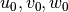. To find the distance  to a surface
, we need to solve the equation:
to a surface
, we need to solve the equation:
(3)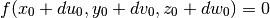
If no solutions to equation (3) exist or the only solutions are complex, then the particle’s direction of travel will not intersect the surface. If the solution to equation (3) is negative, this means that the surface is “behind” the particle, i.e. if the particle continues traveling in its current direction, it will not hit the surface. The complete derivation for different types of surfaces used in OpenMC will be presented in the following sections.
Since :math:f(x,y,z)` in general is quadratic in , , and
, this implies that  is
quadratic in . Thus we expect at most two real solutions to
(3). If no solutions to (3) exist or
the only solutions are complex, then the particle’s direction of travel will not
intersect the surface. If the solution to (3) is negative,
this means that the surface is “behind” the particle, i.e. if the particle
continues traveling in its current direction, it will not hit the surface.
is
quadratic in . Thus we expect at most two real solutions to
(3). If no solutions to (3) exist or
the only solutions are complex, then the particle’s direction of travel will not
intersect the surface. If the solution to (3) is negative,
this means that the surface is “behind” the particle, i.e. if the particle
continues traveling in its current direction, it will not hit the surface.
Once a distance has been computed to a surface, we need to check if it is closer than previously-computed distances to surfaces. Unfortunately, we cannot just use the minimum function because some of the calculated distances, which should be the same in theory (e.g. coincident surfaces), may be slightly different due to the use of floating-point arithmetic. Consequently, we should first check for floating-point equality of the current distance calculated and the minimum found thus far. This is done by checking if
(4)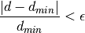
where is the distance to a surface just calculated, 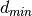 is
the minimum distance found thus far, and 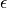 is a small number. In
OpenMC, this parameter is set to 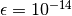 since all floating
calculations are done on 8-byte floating point numbers.
2.2.1. Plane Perpendicular to an Axis¶
The equation for a plane perpendicular to, for example, the x-axis is simply
. As such, we need to solve 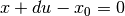. The
solution for the distance is
(5)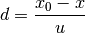
Note that if the particle’s direction of flight is parallel to the x-axis, i.e. 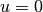, the distance to the surface will be infinity. While the example here was for a plane perpendicular to the x-axis, the same formula can be applied for the surfaces and .
2.2.2. Generic Plane¶
The equation for a generic plane is . Thus, we need to
solve the equation 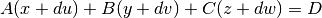. The solution
to this equation for the distance is
(6)
Again, we need to check whether the denominator is zero. If so, this means that the particle’s direction of flight is parallel to the plane and it will therefore never hit the plane.
2.2.3. Cylinder Parallel to an Axis¶
The equation for a cylinder parallel to, for example, the x-axis is 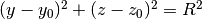. Thus, we need to solve 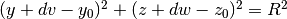. Let us define and 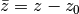. We then have
(7)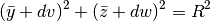
Expanding equation (7) and rearranging terms, we obtain
(8)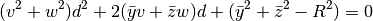
This is a quadratic equation for . To simplify notation, let us define
, , and 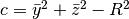. Thus, the distance is just the solution to
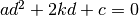:
(9)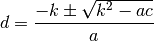
A few conditions must be checked for. If 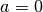, this means the particle is parallel to the cylinder and will thus never intersect it. Also, if 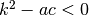, this means that both solutions to the quadratic are complex. In physical terms, this means that the ray along which the particle is traveling does not make any intersections with the cylinder.
If we do have intersections and , this means that the particle is
inside the cylinder. Thus, one solution should be positive and one should be
negative. Clearly, the positive distance will occur when the sign on the
square root of the discriminant is positive since  .
.
If we have intersections and this means that the particle is outside the cylinder. Thus, the solutions to the quadratic are either both positive or both negative. If they are both positive, the smaller (closer) one will be the solution with a negative sign on the square root of the discriminant.
The same equations and logic here can be used for cylinders that are parallel to the y- or z-axis with appropriate substitution of constants.
2.2.4. Sphere¶
The equation for a sphere is  . Thus, we need to solve the equation
. Thus, we need to solve the equation
(10)
Let us define 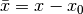, , and . We then have
(11)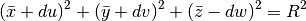
Expanding equation (11) and rearranging terms, we obtain
(12)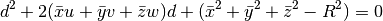
This is a quadratic equation for . To simplify notation, let us define
and 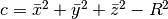. Thus, the distance is just the solution to
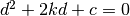:
(13)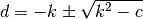
If the discriminant 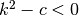, this means that both solutions to the quadratic are complex. In physical terms, this means that the ray along which the particle is traveling does not make any intersections with the sphere.
If we do have intersections and , this means that the particle is inside the sphere. Thus, one solution should be positive and one should be negative. The positive distance will occur when the sign on the square root of the discriminant is positive. If we have intersections but this means that the particle is outside the sphere. The solutions to the quadratic will then be either both positive or both negative. If they are both positive, the smaller (closer) one will be the solution with a negative sign on the square root of the discriminant.
2.3. Finding a Cell Given a Point¶
Another basic algorithm is to determine which cell contains a given point in the global coordinate system, i.e. if the particle’s position is , what cell is it currently in. This is done in the following manner in OpenMC. With the possibility of multiple levels of coordinates, we must perform a recursive search for the cell. First, we start in the highest (most global) universe, which we call the base universe, and loop over each cell within that universe. For each cell, we check whether the specified point is inside the cell using the algorithm described in Determining if a Coordinate is in a Cell. If the cell is filled with a normal material, the search is done and we have identified the cell containing the point. If the cell is filled with another universe, we then search all cells within that universe to see if any of them contain the specified point. If the cell is filled with a lattice, the position within the lattice is determined, and then whatever universe fills that lattice position is recursively searched. The search ends once a cell containing a normal material is found that contains the specified point.
2.4. Determining if a Coordinate is in a Cell¶
To determine which cell a particle is in given its coordinates, we need to be able to check whether a given cell contains a point. The algorithm for determining if a cell contains a point is as follows. For each surface that bounds a cell, we determine the particle’s sense with respect to the surface. As explained earlier, if we have a point and a surface , the point is said to have negative sense if 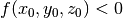 and positive sense if 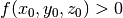. If for all surfaces, the sense of the particle with respect to the surface matches the specified sense that defines the half-space within the cell, then the point is inside the cell. Note that this algorithm works only for simple cells defined as intersections of half-spaces.
It may help to illustrate this algorithm using a simple example. Let’s say we have a cell defined as
<surface id="1" type="sphere" coeffs="0 0 0 10" />
<surface id="2" type="x-plane" coeffs="-3" />
<surface id="3" type="y-plane" coeffs="2" />
<cell id="1" surfaces="-1 2 -3" />
This means that the cell is defined as the intersection of the negative half space of a sphere, the positive half-space of an x-plane, and the negative half-space of a y-plane. Said another way, any point inside this cell must satisfy the following equations
(14)
In order to determine if a point is inside the cell, we would substitute its coordinates into equation (14). If the inequalities are satisfied, than the point is indeed inside the cell.
2.5. Handling Surface Crossings¶
A particle will cross a surface if the distance to the nearest surface is closer than the distance sampled to the next collision. A number of things happen when a particle hits a surface. First, we need to check if a non-transmissive boundary condition has been applied to the surface. If a vacuum boundary condition has been applied, the particle is killed and any surface current tallies are scored to as needed. If a reflective boundary condition has been applied to the surface, surface current tallies are scored to and then the particle’s direction is changed according to the procedure in Reflective Boundary Conditions.
Next, we need to determine what cell is beyond the surface in the direction of travel of the particle so that we can evaluate cross sections based on its material properties. At initialization, a list of neighboring cells is created for each surface in the problem as described in Building Neighbor Lists. The algorithm outlined in Finding a Cell Given a Point is used to find a cell containing the particle with one minor modification; rather than searching all cells in the base universe, only the list of neighboring cells is searched. If this search is unsuccessful, then a search is done over every cell in the base universe.
2.6. Building Neighbor Lists¶
After the geometry has been loaded and stored in memory from an input file, OpenMC builds a list for each surface containing any cells that are bounded by that surface in order to speed up processing of surface crossings. The algorithm to build these lists is as follows. First, we loop over all cells in the geometry and count up how many times each surface appears in a specification as bounding a negative half-space and bounding a positive half-space. Two arrays are then allocated for each surface, one that lists each cell that contains the negative half-space of the surface and one that lists each cell that contains the positive half-space of the surface. Another loop is performed over all cells and the neighbor lists are populated for each surface.
2.7. Reflective Boundary Conditions¶
If the velocity of a particle is and it crosses a surface of the form with a reflective boundary condition, it can be shown based on geometric arguments that the velocity vector will then become
(15)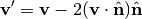
where is a unit vector normal to the surface at the point of the surface crossing. The rationale for this can be understood by noting that 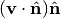 is the projection of the velocity vector onto the normal vector. By subtracting two times this projection, the velocity is reflected with respect to the surface normal. Since the magnitude of the velocity of the particle will not change as it undergoes reflection, we can work with the direction of the particle instead, simplifying equation (15) to
(16)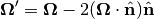
where 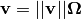. The direction of the surface normal will be the gradient of the surface at the point of crossing, i.e. 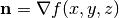. Substituting this into equation (16), we get
(17)
If we write the initial and final directions in terms of their vector components, and , this allows us to represent equation (16) as a series of equations:
(18)
One can then use equation (18) to develop equations for transforming a particle’s direction given the equation of the surface.
2.7.1. Plane Perpendicular to an Axis¶
For a plane that is perpendicular to an axis, the rule for reflection is almost
so simple that no derivation is needed at all. Nevertheless, we will proceed
with the derivation to confirm that the rules of geometry agree with our
intuition. The gradient of the surface is simply
. Note that this vector is already normalized,
i.e. . The second two equations in
(18) tell us that  and
and  do not change and
the first tell us that
do not change and
the first tell us that
(19)
We see that reflection for a plane perpendicular to an axis only entails negating the directional cosine for that axis.
2.7.2. Generic Plane¶
A generic plane has the form . Thus, the
gradient to the surface is simply whose norm squared
is  . This implies that
. This implies that
(20)
Substituting equation (20) into equation (18) gives us the form of the solution. For example, the x-component of the reflected direction will be
(21)
2.7.3. Cylinder Parallel to an Axis¶
A cylinder parallel to, for example, the x-axis has the form  . Thus, the gradient to the surface is
. Thus, the gradient to the surface is
(22)
where we have introduced the constants and . Taking the square of the norm of the gradient, we find that
(23)
This implies that
(24)
Substituting equations (24) and (22) into equation (18) gives us the form of the solution. In this case, the x-component will not change. The y- and z-components of the reflected direction will be
(25)
2.7.4. Sphere¶
The surface equation for a sphere has the form . Thus, the gradient to the surface is
(26)
where we have introduced the constants . Taking the square of the norm of the gradient, we find that
(27)
This implies that
(28)
Substituting equations (28) and (26) into equation (18) gives us the form of the solution:
(29)
2.7.5. Cone Parallel to an Axis¶
A cone parallel to, for example, the z-axis has the form . Thus, the gradient to the surface is
(30)
where we have introduced the constants , , and . Taking the square of the norm of the gradient, we find that
(31)
This implies that
(32)
Substituting equations (32) and (30) into equation (18) gives us the form of the solution:
(33)